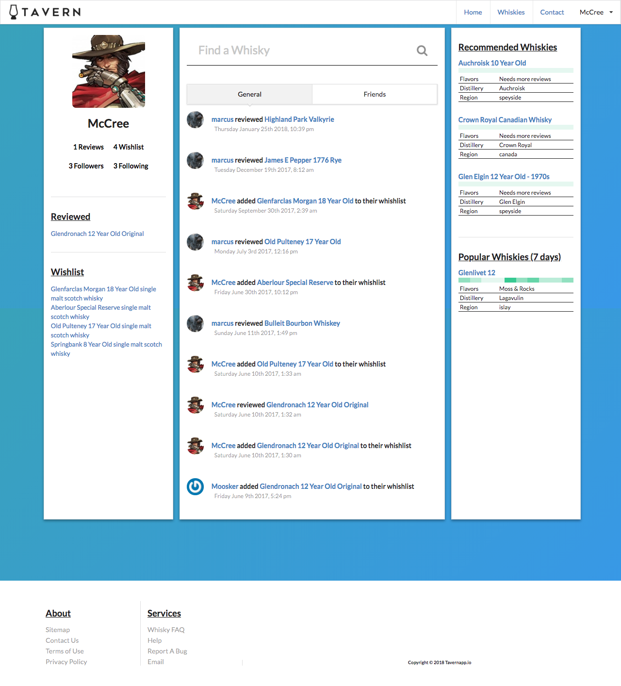
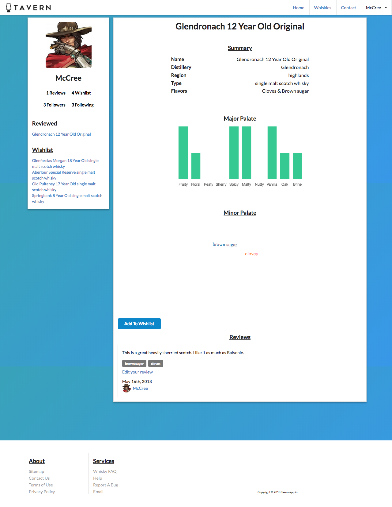
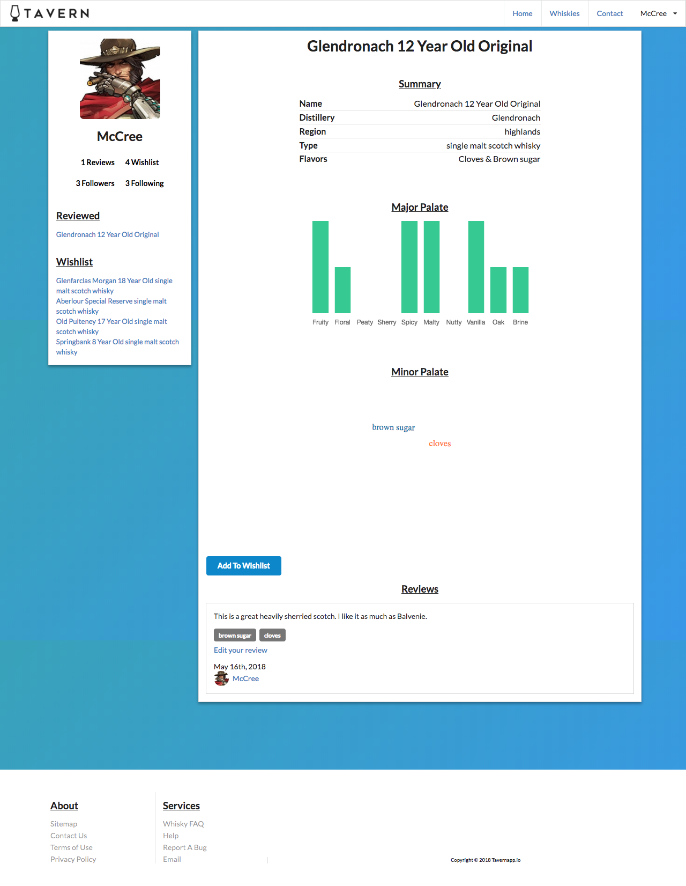
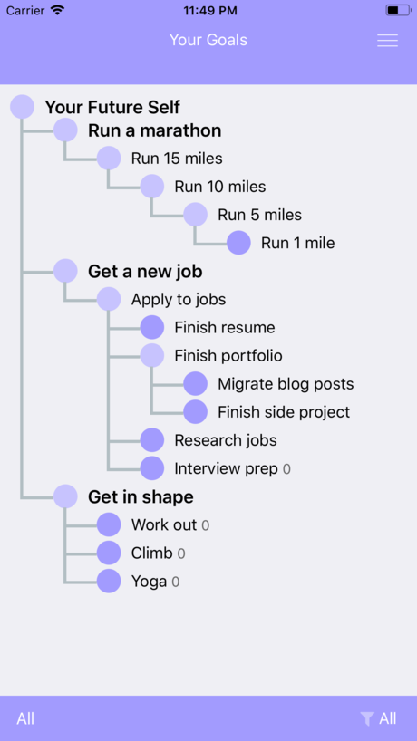
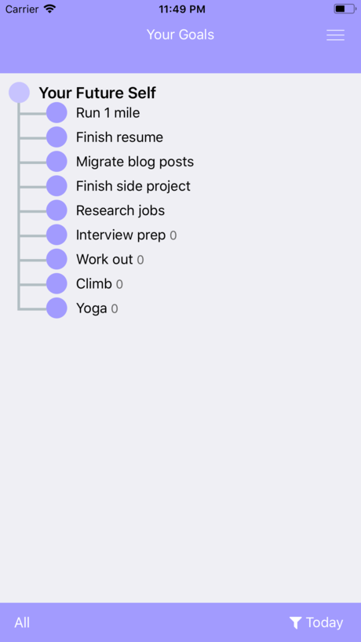
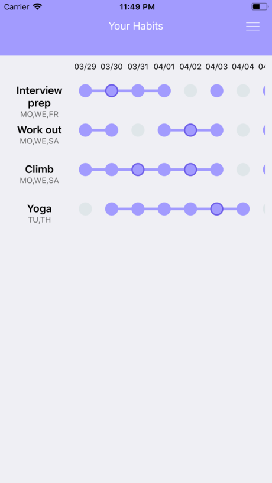
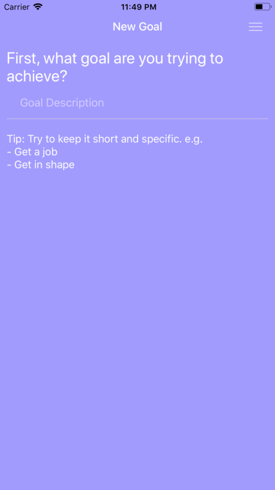
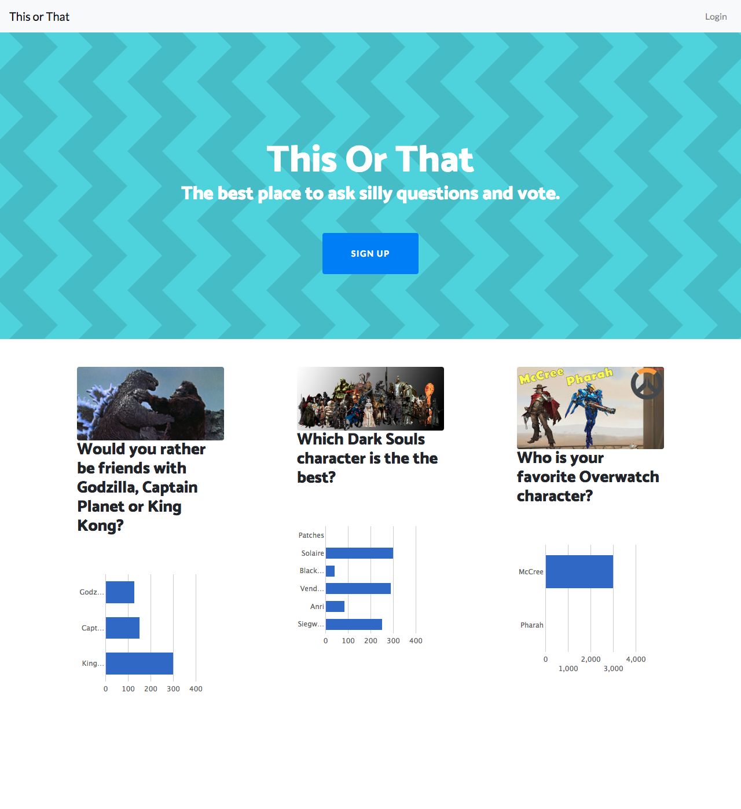

Projects
Tavern is a whisky encyclopedia where users can create create accounts, read, leave their own reviews, and follow other users of the app.
The app was created for people who love good whisky to be able to do research before they invest their hard earned money on a new bottle. We tried to break down each review into 10 of the most common flavor profiles associated with whisky so users could get a general idea at a glance but if they wanted more information we also enabled a reviewer to their own thoughts on more subtle specific flavors like "toasted cactus plums". The social aspect was added so that a user could make friends and follow people that have similar tastes, this way they would be able to learn about different distilleries and expand their whisky knowledge base.
I'm the co creator and responsible for all the frontend. I worked with a team of 3 other developers using Git version control. I built the UX/UI using Reactjs because I'm a huge fan of how well it works for data visualization. Because of react's virtual DOM I was able to write a several components and use them as building blocks to make responsive web pages with no reloading. I also love JSX! I found being able to write JavaScript in my HTML felt very intuitive and made the process flow much more smoothly. I used Apollo js to handle state management, make graphQL queries, and mutations. The styling was done mainly using react-semantic-ui, bootstrap 4, and various libraries such as Chart.js. Semantic UI had so many out of the box features that I felt would work well with the asthetic we had in mind.
 

Aggo is a productivity app for iOS. It was created to be a life planner where the user can break down large goals into daily steps in a visual way. We figured that when goals are too lofty they seem unatainable and therefore someone might Feel lost at where to begin and may even abandon their goal. AGGO was designed to help users break them down into smaller pieces that could be started immedietly. Hopefully by planning out daily goals, a user may develop a path to accomplish their larger goal.
I'm the co creator of AGGO and worked with a team of 2 other developers. I was responsible for writing the menu logic for the UI. I decided to use React Native for this project because JavaScript is my strongest language and of my previous experience with Tavern. Also, it was an attractive option because of how easy it would be to deploy our app both on the Apple Store and Google Play. For state management we used mobx state tree becuase of it's immutable approach which we felt would make shared code much more readable. However it was one of the more challenging aspects to building this app after coming from vanilla react state and using Apollo js.
   This or That - Solo developer
This or That is a social polling web app. I thought it would be a fun project because my friends and I are always asking each other these kinds of questions so I thought I could visualize them with a web app. By signing up users can create and vote on whatever poll they want and the results are displayed as a bar chart. Users can also follow their friends and see what new polls they have posted in a feed.
This was my first fullstack web application and definitely a challange for me. The stack I used was Postgres, Ruby on Rails, and JavaScript/jQuery. I went with postgres as my database because I had previous experience with it when I worked on Tavern. Even though I'm most comfortable using JavaScript I decided to write this project using Ruby on Rails over node and express js because I don't believe that only using one language is necessarily an advantage, I wanted to learn something new, and its a full web framework with full migration support and scaffolding which would really cut down my development time. I also like that Rails is an opinionated framework that would force me to keep my code structured using CRUD architecture.
One thing that I struggled with was writing the integration and unit tests. Making tests accurate that would also not break every time I refactored my code took the longest amount time but was worth it in the end. This was also the first time I had to consider security concerns from a backend perspective. I wrote the user authentication from scratch instead of using a ruby gem like devise so that I would understand how encryption works by creating a password digest using bcrypt.
